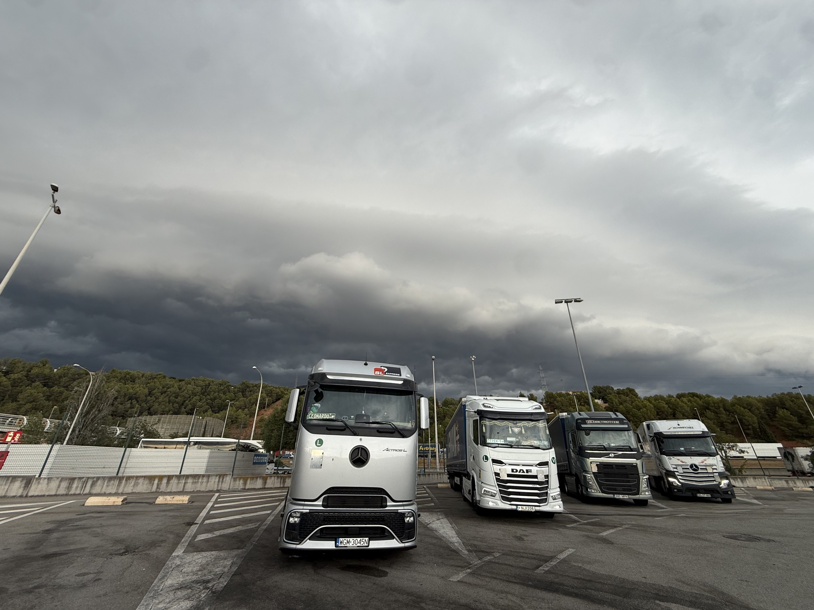
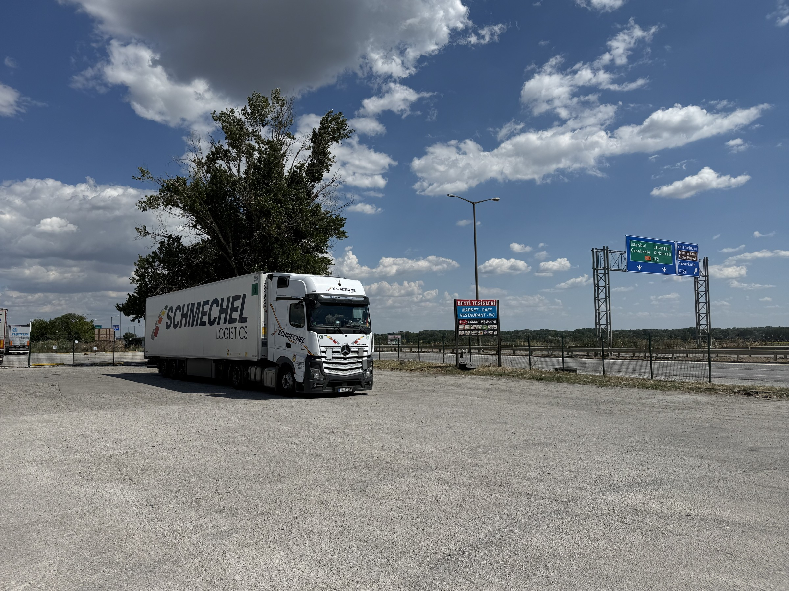
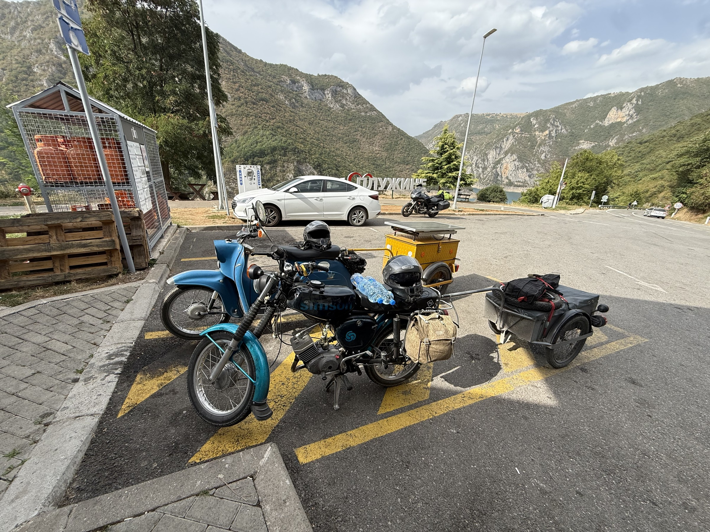
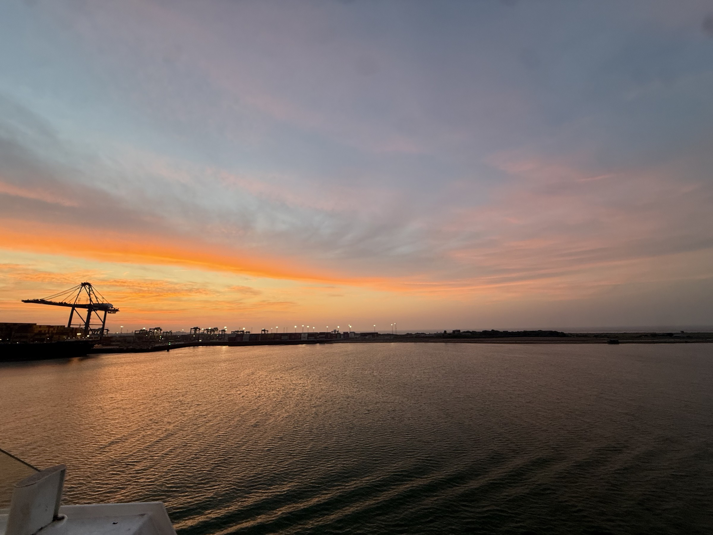
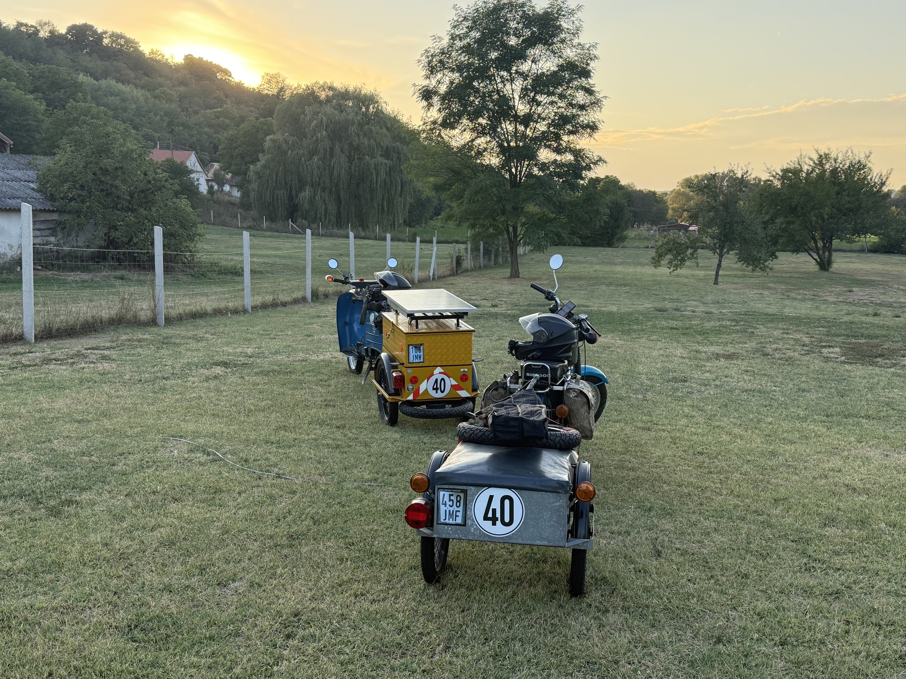
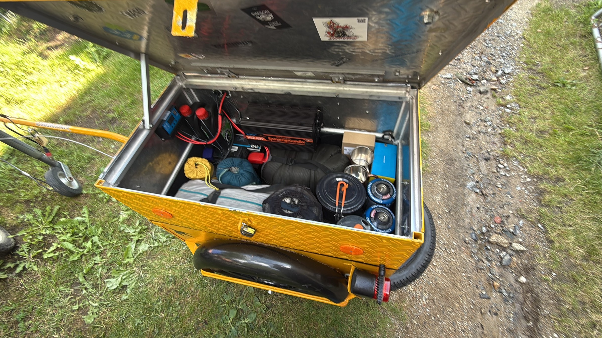
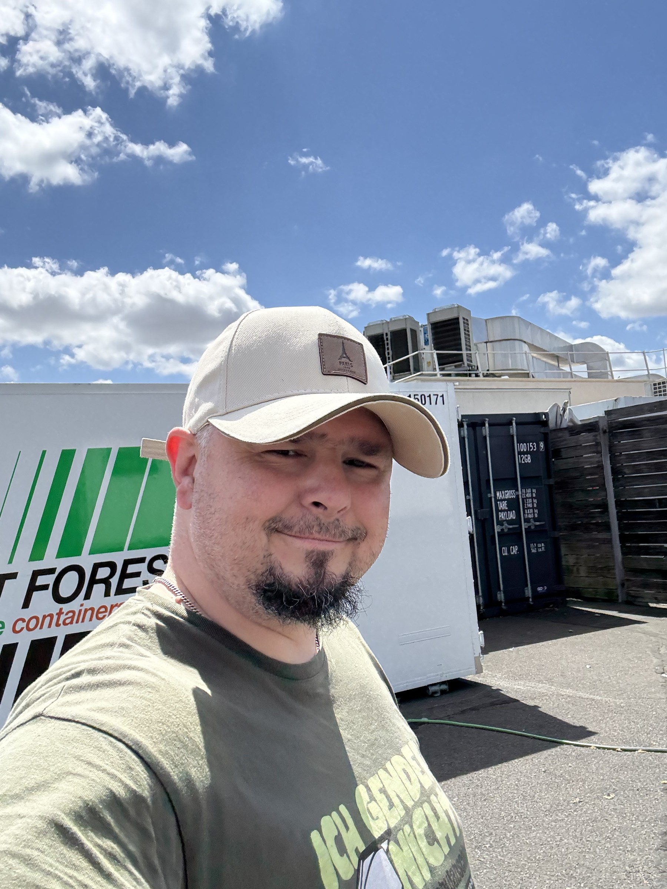

01 / AUF DER STRASSE
LKW & Truck-Doku
Mitten im Fahreralltag: Abfahrtskontrolle, Be- und Entladen, lange Strecken und die besonderen Momente dazwischen. Begleite mich hinter dem Lenkrad.
Die Videos auf YouTube entdecken ↗
LKW · SIMSON · ECHTE GESCHICHTEN
Vom LKW-Lenkrad bis zum Simson-Schraubenschlüssel. Komm mit auf meine Touren und mitten hinein ins echte Leben.
Zwei Welten. Eine Leidenschaft.
Große Touren und kleine Zweitakter.
Hier findet beides seinen Platz.

Mitten im Fahreralltag: Abfahrtskontrolle, Be- und Entladen, lange Strecken und die besonderen Momente dazwischen. Begleite mich hinter dem Lenkrad.
Die Videos auf YouTube entdecken ↗
Die Hände am Schraubenschlüssel und den nächsten Ausflug im Kopf. Simson fahren, aufbauen, reparieren und umbauen – mit Leidenschaft für Mopeds und Zweitakter.
Mit in die Werkstatt und auf Tour ↗Auf meinem YouTube-Kanal
Ganze Geschichten oder ein kurzer Einblick – schau direkt auf YouTube vorbei.
Bilder von unterwegs
Ein Stück Alltag. Ein bisschen Fernweh.
Und immer eine Geschichte dabei.




Der Mensch hinter dem Kanal
Ob am Steuer des LKW oder beim Schrauben an der Simson: Ich nehme dich mit in meinen Alltag und auf meine Touren.
Hier geht es um das, was mich begeistert – unterwegs sein, anpacken und die eigenen Geschichten teilen. Schön, dass du dabei bist.
Dein Andy
Neue Videos und Einblicke findest du auf meinem YouTube-Kanal.